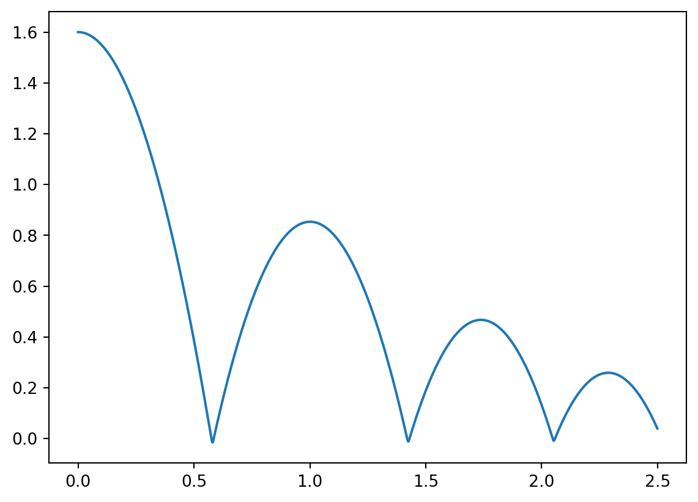
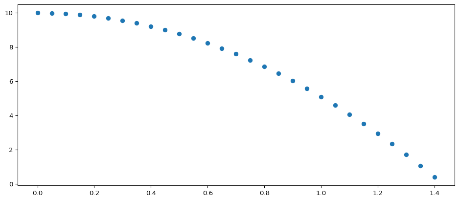
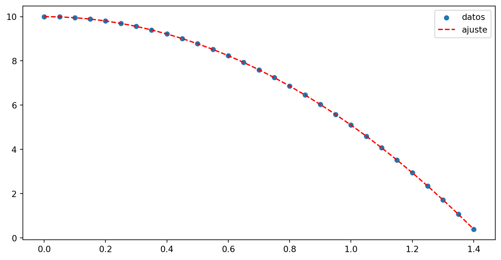
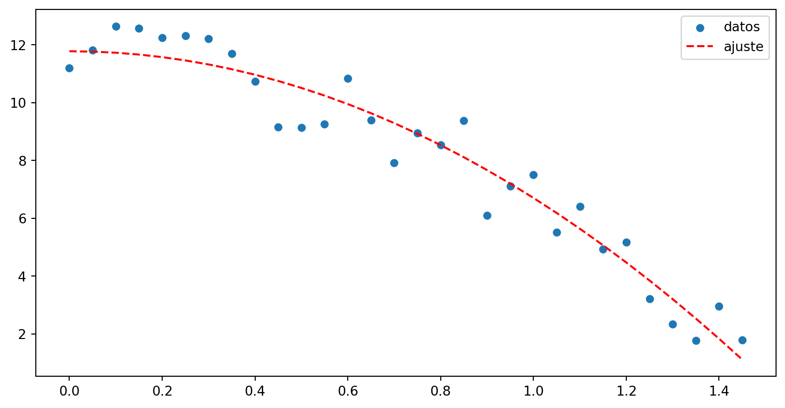
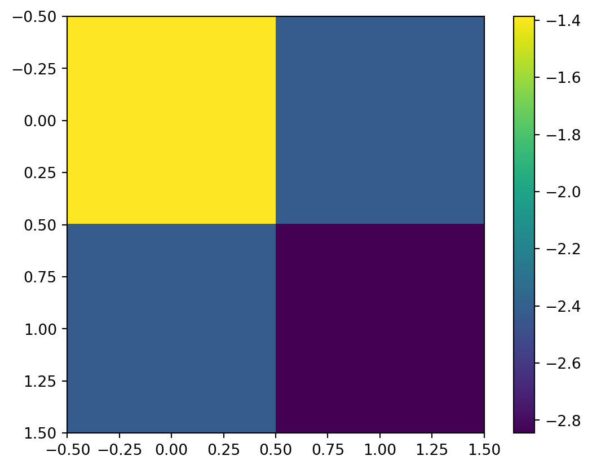

import pandas as pd
import numpy as np
s = pd.Series([1, 3, 5, np.nan, 6, 8])
s0 1.0
1 3.0
2 5.0
3 NaN
4 6.0
5 8.0
dtype: float64Scipy y Pandas - Ajuste de datos
El módulo pandas es una herramienta que permite, entre muchas otras cosas, trabajar con datos estructurados en archivos de texto. Dentro de los formatos de archivos de texto más usuales tenemos las extensiones csv,tsv y txt, en donde se tienen datos separados por coma, tabulaciones y sin una separación específica respectivamente. De todas maneras la extensión del archivo no resulta concluyente para comprender como están estructurados los datos, por lo que siempre se aconseja “mirar” el archivo antes de usarlo.
A la hora de recojer y producir datos, debemos informar a la herramienta que utilicemos cómo están estructurados los mismos, ya sea que estén separados por espacios, tabulaciones, comas, punto y coma o cualquier otro delimitador válido según el formato. Los errores más comunes cuando no se obtienen los resultados esperados suelen surgir por una mala interpretación de cómo están organizados al momento de leerlos o escribirlos para su uso.
Para poder usar la librería pandas debemos importarla como hacemos con cualquier otra
import pandas as pdVeamos lo básico de pandas antes de leer datos desde un archivo.
Los datos en pandas se estructuran a partir de dos elementos básicos: series y dataframes que podemos pensar como vectores columna y matrices (o tablas) respetivamene.
import pandas as pd
import numpy as np
s = pd.Series([1, 3, 5, np.nan, 6, 8])
s0 1.0
1 3.0
2 5.0
3 NaN
4 6.0
5 8.0
dtype: float64Como vemos, el vector esta indexado al estilo python iniciándose en cero para el primer elemento. Un dataframe se puede crear a partir de varias series puestas una a continuación de otra, o desde datos que ya estén tabulados. En ese caso, cada columna será entonces una serie. Las columnas pueden nombrarse o leerse desde un archivo en caso de que estemos leyendo los datos. También es posible reemplazar el índice por por otros datos tales como fechas, horas, etc. incluso es posible eliminar el índice del dataframe.
df = pd.DataFrame(np.random.rand(6,4),columns=list("ABCD"))
print(df) A B C D
0 0.749483 0.502891 0.011760 0.752507
1 0.251436 0.250654 0.724778 0.994185
2 0.108454 0.591301 0.794492 0.849653
3 0.271325 0.881569 0.366973 0.584153
4 0.268785 0.790208 0.819707 0.100835
5 0.681570 0.465853 0.536726 0.832452A = df["A"]
print(A)
print(A[0])
print(df["A"][1])0 0.749483
1 0.251436
2 0.108454
3 0.271325
4 0.268785
5 0.681570
Name: A, dtype: float64
0.7494825554353505
0.2514364771012484Las series se pueden convertir en arrays de numpy haciendo lo siguiente:
a_np = df['A'].to_numpy()
type(a_np)Para leer archivos nos vamos a restringir al formato csv que aunque su nombre indique que los valores están separados por comas, en verdad, admite todo un zoológico de posibles caracteres para separar los datos.
para hacerlo usamos la función read_csv cuya ayuda se pude consultar tanto usando la ayuda en línea (usando ?) como la propia de pandas
pd.read_csv? # si ejecutamos esta línea nos muestra la ayda de esta funciónimport pandas as pd
#| warning: false
datos = pd.read_csv('../assets/fallingtennisball02.d',names=['t','y'],delim_whitespace=True)
datos.head() # los pimeros datos del archivo
datos.tail() # los últimos/tmp/ipykernel_105051/913674148.py:4: FutureWarning: The 'delim_whitespace' keyword in pd.read_csv is deprecated and will be removed in a future version. Use ``sep='\s+'`` instead
datos = pd.read_csv('../assets/fallingtennisball02.d',names=['t','y'],delim_whitespace=True)| t | y | |
|---|---|---|
| 2495 | 2.495 | 0.048161 |
| 2496 | 2.496 | 0.046128 |
| 2497 | 2.497 | 0.044086 |
| 2498 | 2.498 | 0.042033 |
| 2499 | 2.499 | 0.039971 |
Hagamos una gráfica de estos datos
import matplotlib.pyplot as plt
fig, ax = plt.subplots()
ax = plt.plot(datos['t'],datos['y'])
Cuando se importan datos usando pandas (u otra libería) los problemas más usuales suelen ser:
Específicamente, el separador decimal suele ser causa de que los datos que deben ser interpretados como número, lo sean como texto, dando lugar a errrores de tipo.
datos0 = pd.read_csv('../assets/ejemplo.csv')
# leo este archivo tal como está no obtengo algo coherente
print(datos0) col1;"col2";"col3"
0 63;0 38;0 7
55;0 64;0 68
87;0 77;0 4
29;0 24;0 48
4;0 59;0 92
11;0 11
11;0 46;0 11
22;0 8;0 74datos2 = pd.read_csv('../assets/ejemplo.csv',sep=";")
# si le digo que el separador es punto y coma lo lee como corresponde y asigna los combres de las columnas automáticamente junto con los índices
print(datos2) col1 col2 col3
0 0,63 0,38 0,7
1 0,55 0,64 0,68
2 0,87 0,77 0,4
3 0,29 0,24 0,48
4 0,4 0,59 0,92
5 0,4 0,11 0,11
6 0,11 0,46 0,11
7 0,22 0,8 0,74El dataframe se creó, pero es probable que aunque se vean “bien” los datos numéricos no tengan formato de número siendo que por defecto, pandas espera que el separador decimal sea un punto y no una coma, comprobémoslo
type(datos2['col1'][0])strPara evitar esto, debemos usar el parametro decimal como argumento al momento de leer el archivo.
datos2 = pd.read_csv('../assets/ejemplo.csv',decimal=",",sep=";")Así como leimos usando read_csv vamos a escribir usando to_csv. Pueden consultar la ayuda en linea
df2 = pd.DataFrame(np.random.rand(6,4),columns=list("ABCD")) # creamos unos datos
df2| A | B | C | D | |
|---|---|---|---|---|
| 0 | 0.505756 | 0.403033 | 0.633195 | 0.694196 |
| 1 | 0.076378 | 0.597230 | 0.086739 | 0.684843 |
| 2 | 0.207735 | 0.717681 | 0.793913 | 0.310918 |
| 3 | 0.375148 | 0.535652 | 0.705988 | 0.119001 |
| 4 | 0.149409 | 0.916257 | 0.034709 | 0.466023 |
| 5 | 0.680268 | 0.687123 | 0.809643 | 0.115392 |
df2.to_csv('assets/ejemplo2.csv',index=False,encoding='utf-8')
# index = False elimina la columna de los índices
# encoding = 'utf-8' es la codificación estándar
# https://es.wikipedia.org/wiki/UTF-8También podemos exportar a formato excel usando la función to_excel. Para más información consultar la ayuda en línea
df2.to_excel('assets/ejemplo2.xlsx')El módulo Scipy es una colección de herramientas para el cálculo científico de amplio espectro. Nos centraremos en unas pocas funciones de su vasto arsenal: aquellas que nos permiten obtener la expresión analítica que más se ajusta a un conjunto de datos discretos.
Es de suma importancia a la hora de ajustar los datos a una curva, tener una idea del modelo físico al cual queremos ajustar dichos datos. Es decir, la hipótesis teórica que el experimento debe validar es un a-priori que la experimentación validará (o no) y somos nosotros los experimentadores quienes debemos proveer el modelo al cual ajustar.
En términos matemáticos lo que optimize hace es es minimizar una función del tipo:
\[\sum_i (f(x_i,\beta) - y_i)^2\]
en donde \(\beta\) son los parámetros que podemos variar, y \(x_i\) y \(y_i\) conforman los pares de valores obtenidos experimentalmente (suponemos el caso de una variable de entrada y una de salida por simplicidad en la notación)
El modulo a usar es optimize de la libreria scipy por lo que para importarlo haremos
from scipy import optmize as opo alternativamente:
import scipy.optimize as spVamos a crear unos datos a partir del modelo teórico de una caída libre sin rozamiento. Debajo vemos como se filtra un array y para obtener los valores de altura mayores a cero y luego “rebanamos” el array t para que tenga la misma cantidad de elementos que el array de alturas, y luego hacemos un gráfico de dispersión (scatter) como si los datos hubieran sido obtenidos desde un experimento. Está claro que estos datos van a ajustar “perfecto” al modelo teórico ya que lso datos fueron creados a paritr de éste.
import numpy as np
import matplotlib.pyplot as plt
t = np.arange(0,10,0.05)
y = -4.9*t**2+10
y0 = y[y > 0]
fig, ax = plt.subplots()
fig.set_size_inches(12,5)
ax = ax.scatter(t[:len(y0)],y0)
Para ver más sobre como filtrar o rebanar un array pueden consultar acá o acá
con nuestras habilidades de pandas, construyamos un archivo ficticio en base a estos datos, para luego “leerlo” y a partir de ahí usar el ajuste de curvas. Este paso no es necsario, ya que podemos usar los datos ya disponibles en los arrays, pero no viene mal la práctica
import pandas as pd
df0 = pd.DataFrame([t[:len(y0)],y0])
# este array tiene dos filas y N columnas por lo que el dataframe no nos sirve
df = pd.DataFrame(np.array([t[:len(y0)],y0]).T, columns=['t','y'])
# si transponemos los datos queda en la forma correta y podemos agregar los nombres
# de los ejes
df.head() # para mirar los primeros datos
df.tail() # para mirar los ultimos datos
df.to_csv('../assets/ej_op_0.csv',index=False)
# la ruta para que funcione debe ser tu directorio de trabajo (o dibde se haya montado en tu sesión de colab)
# index=False hace que no exportemos la columna de los índices que genera pandas# otra opción para crear el dataframe es
# pasar como índices los nombres de las columnas y
# transponer el dataframe una vez creado
arr = np.array([t[:len(y0)],y0])
dfa = pd.DataFrame(arr,index=['t','y']).T
dfa.head()| t | y | |
|---|---|---|
| 0 | 0.00 | 10.00000 |
| 1 | 0.05 | 9.98775 |
| 2 | 0.10 | 9.95100 |
| 3 | 0.15 | 9.88975 |
| 4 | 0.20 | 9.80400 |
datos = pd.read_csv('../assets/ej_op.csv')Tenemos que crear una función que contega la información del modelo. Como primer parámetro debe contener la variable independiente y luego los parámetros
def opti(x,a,b):
"""
x: variable independiente
a: parámetro de la aceleración
b: parámetro de la altura inicial
"""
return -0.5*a*x**2+bfrom scipy import optimize as op
param_a, cov = op.curve_fit(opti,datos['t'],datos['y'])
print('aceleracion' , param_a[0],'m/s/s','\n','altura inicial',param_a[1],'m')aceleracion 9.8 m/s/s
altura inicial 10.0 mPodemos hacer un gráfico de los “datos” contra la curva con los parámetros obtenidos del ajuste
fig,ax = plt.subplots()
fig.set_size_inches(10,5)
ax.scatter(datos['t'],datos['y'],label='datos',lw=0.1)
ax.plot(datos['t'],opti(datos['t'],param_a[0],param_a[1]),'--',label='ajuste',color='red')
ax.legend(loc='upper right')
Si quiséramos tener un caso que se vea mas “real” podemos hacer que los datos generados tengan un poco de “ruido”
t = np.arange(0,10,0.05)
# agregamos un número aleatorio entre -1 y 1
ruido = np.random.rand(len(t))*3
y = -4.9*t**2+10 +ruido
y0 = y[y > 0]
#fig, ax = plt.subplots()
#fig.set_size_inches(12,5)
#ax = ax.scatter(t[:len(y0)],y0)
param_a, cov = op.curve_fit(opti,t[:len(y0)],y0)
fig,ax = plt.subplots()
fig.set_size_inches(10,5)
ax.scatter(t[:len(y0)],y0,label='datos',lw=0.1)
ax.plot(t[:len(y0)],opti(t[:len(y0)],param_a[0],param_a[1]),'--',label='ajuste',color='red')
ax.legend(loc='upper right')
print('aceleracion' , param_a[0],'m/s/s','\n','altura inicial',param_a[1],'m')aceleracion 10.145870120911862 m/s/s
altura inicial 11.77936259919328 m
Si hacemos una gráfica de colores con la matriz de covarianza obtenemos una idea del “error” de cada parámetro. La interpretación de esta matriz escapa a lo que podemos ver en esta materia. La idea es que es una matriz cuadrada que relaciona todos los parámetros a los que ajustamos entre si. La diagonal es una medida del error de un parámetro específico las otras celdas son entre un parámetro y otro: es decir, la diagonal nos da una idea del error en un parámetro mientras que el resto nos indica como se influyen entre si los parámetros.
print(np.diag(cov))
print(cov)[0.24999245 0.05812323]
[[0.24999245 0.08911189]
[0.08911189 0.05812323]]en nuestro caso los errores son muy pequeños porque los datos son generados a partir de un modelo teórico.
plt.imshow(np.log(np.abs(cov)))
plt.colorbar()
Se puede usar constants? para ver la ayuda el listado de constantes disponibles
from scipy import constants
print(constants.Boltzmann)
g = constants.g
print(g)
constants.unit('electron mass') # ver las unidades
print(constants.yotta) # acceder a prefijos
k = constants.kilo
print(10*k)
constants.gram # Kg / g
print(constants.kilogram_force) # Newtons / Kgf
print(constants.kgf)1.380649e-23
9.80665
1e+24
10000.0
9.80665
9.80665